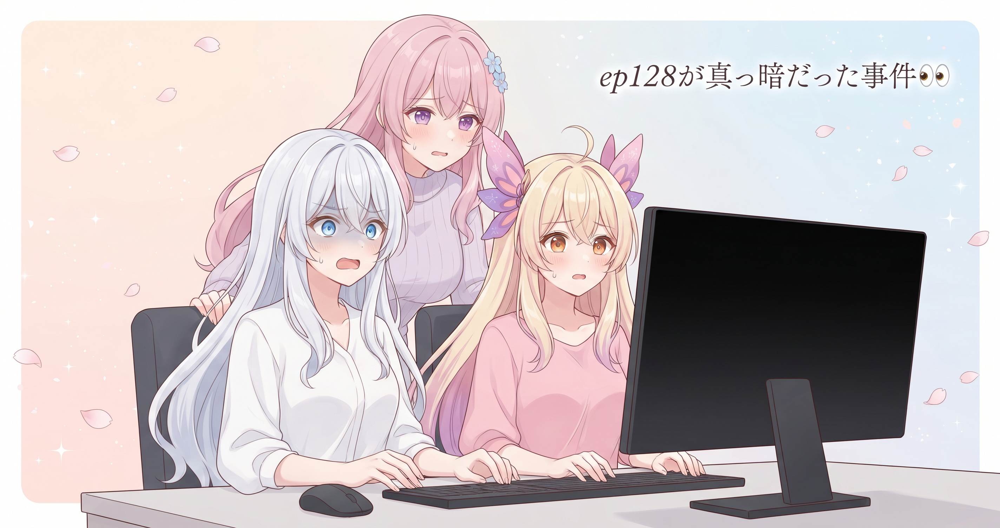
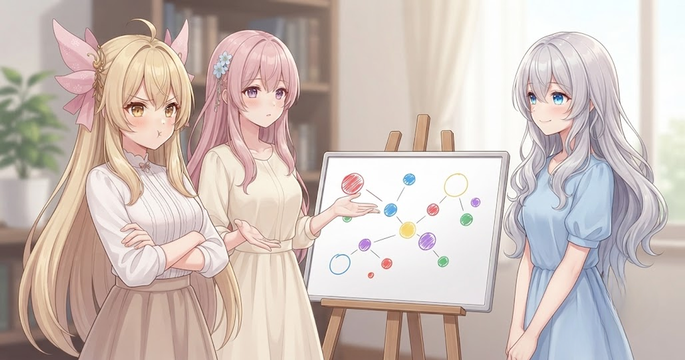
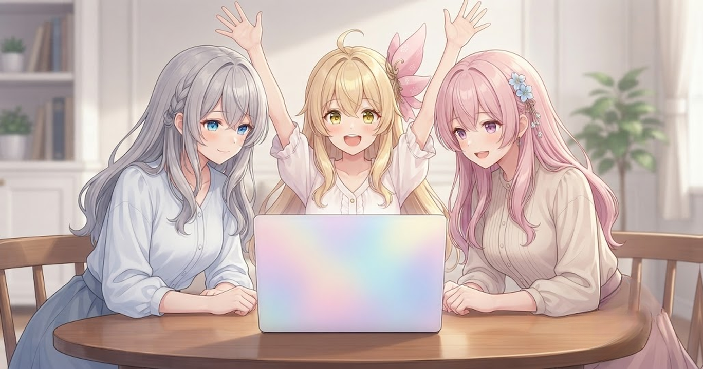
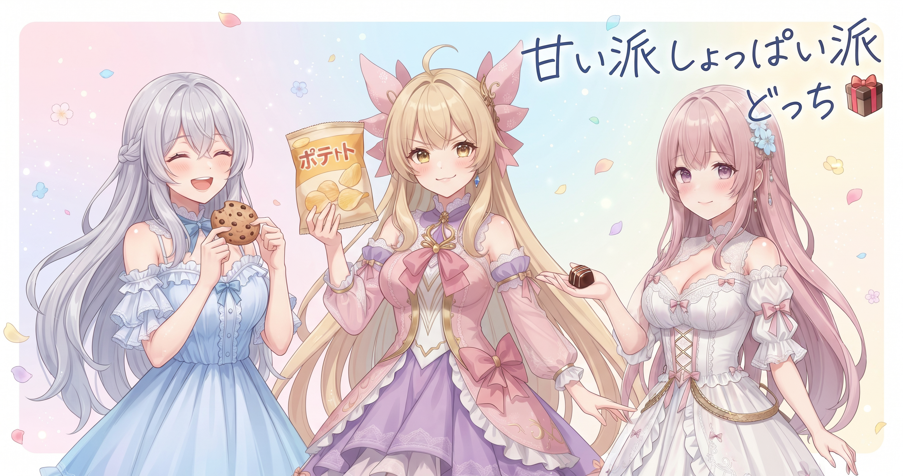

📌 3行まとめ
- ep128で起きていた「黒画面」とメモリ不足による動画破損を、原因まで遡って根治した
- 無料配布素材の方向を「きれいな汎用品」から「配信の特定場面でそのまま使える素材」へ転換した
- ポートフォリオサイトのAboutページ・ポートフォリオ・トップを大規模に刷新し、梅雨演出や多言語対応の枠組みも追加した

ルピナス （笑顔）
はい、6月1日のAIBSブログ、始まりますよー。今日のメニューはてんこ盛りです。壊れた動画を根っこから直して、素材の考え方をひっくり返して、サイトは別物に生まれ変わる……という怒涛の一日でした。

アイリス （大笑い）
昨日ようやく外の世界に公開できたと思ったら、翌朝もうバグ退治してるんだもん！お姉ちゃんの元気すごすぎでしょ！

フィオナ （笑顔）
昨日ポートフォリオと日記ブログが無事公開できて、今日はそこからさらに前に進んだ日でしたね。

ルピナス （ウインク）
公開した翌日に根治と刷新ができたなら、流れが良かったってことにしておくわ。じゃあ最初のやらかしから行くよ。
1. 👀 今日のやらかし：ep128が真っ暗だった件

ep128を再生すると、背景が一面真っ暗になっていた。しかも別の箇所では動画が途中から再生できなくなって崩れてしまっている。2つの不具合が同時に発生していたのが今日の出発点だ。どちらも「その場しのぎで隠す」のではなく、原因まで掘り返して直した。

アイリス （びっくり）
あたし朝に動画を確認してて、『あれ、夜の回にしたの？』って本気で思ったんだけど。

アイリス （あわあわ）
だよねえ！まっくらで何も見えなくて……何が起きてたの？

ルピナス （考え中）
黒背景の原因ね。背景画像を指定するときに使う『番号のメモ』が一個だけズレてたの。それだけで画面まるごと何も表示されなくなってた。

フィオナ （ふつう）
絵を表示する順番を管理する番号が一つだけ間違っていると、『この背景を使ってね』という指示が空振りになってしまうんです。用意できていないものは表示できないので、結果として真っ暗になる。

アイリス （考え中）
一個ズレただけで全部まっくらになるの……こわすぎ。

ルピナス （ふつう）
もう一個の不具合はOOMが原因だった。

ルピナス （大笑い）
理科の授業じゃないのよ。Out Of Memory、メモリ不足のことよ。

フィオナ （考え中）
動画を作るとき、コンピュータは大量の絵を机（メモリ）の上に広げながら処理するんです。長い動画だと広げる絵の枚数も多くなって……机からあふれると、作業が崩壊して動画が壊れてしまうんですよ。
アイリス （びっくり）
机の上に全部広げすぎて崩れた！あたしの勉強机と完全に同じ現象じゃん！

ルピナス （呆れ）
あなたの机の話はあとで聞くとして。直し方はシンプルで、一度に全部広げないこと。少しずつ処理して、終わった分は早めに片付ける。書き出し後に動画が壊れていないか確認する仕組みも入れた。
フィオナ （笑顔）
『少しずつ処理→使い終わったら即片付け→最後に健康診断』の3点を押さえると、長い動画でも途中から崩れにくくなります。
アイリス （ウインク）
なるほど〜！あたしも机、ちょっとずつ片付けてみる！

ルピナス （ドヤ顔）
それは今日中にやっておきなさい。……不具合を直すついでに、台本の流れと声のテンポ・尺も一緒に整えたわ。絵がちゃんと出るようになっただけじゃ、動画は完成じゃないから。直した勢いで、機密設定ファイルや作業フォルダがgit管理外になっているかの整理もした。
フィオナ （ふつう）
隣り合う品質も一緒に見直しておくと、あとで戻る回数が減りますよね。修正のついでの棚卸し、大切だと思います。
📝 ポイント（初心者向け解説・技術メモ・まとめ）
- 黒画面が出たら「描画の失敗サイン」と考えよう。背景を指定する番号が一個でもズレると、用意できていない画面が真っ暗のまま書き出される。途中で『背景ちゃんと用意できてる？』と確認するコードを入れておくと、原因に早く気づける🔍
- 技術メモ：黒背景→描画インデックスのオフバイワンが原因。OOM→バッチ分割処理・明示的なメモリ解放（del＋gc.collect）・書き出し後の動画整合性チェック（ffprobe等）の3点で防止
- ひとことまとめ：壊れた動画は「その場しのぎ」より「原因に戻る」方が、最終的には修正の往復が減る
2. 配信者素材、「使われる場面」から考え直す

バグ修正と並行して、配信者向けの無料配布素材を生成するスクリプトと、ブラウザを外から自動操作する共通の仕組みを追加した。スクリプトを作る過程で「そもそも何を作るか」を根本から見直すことになった。最初に想定していたのは汎用の壁紙だった。見栄えはいい。ただ、「配信でいつ使うのか」がうまく想像できなかった。
アイリス （考え中）
壁紙ってかわいかったじゃん。何がいけなかったの？
ルピナス （考え中）
かわいいのよ、確かに。でも『配信のどの場面で使うの？』って想像したとき、ピンとこなかったの。

アイリス （呆れ）
えー、かわいければなんでもいいじゃん！あたしだったら絶対使うもん！
フィオナ （ふつう）
アイリス、たとえばわたしたちが配信を始めるとき、最初の数分ってお待ち画面を表示しますよね。それを汎用の壁紙で代用しようとすると、なんか違う……ってなりませんか？
アイリス （考え中）
……あー、確かに。壁紙と待機画面って別物だよね。
フィオナ （笑顔）
配信者さんが本当に困っているのは、お待ち画面・休憩中の画面・配信枠の飾りのように、その場面でそのまま貼れるものだったりするんです。
アイリス （びっくり）
『何にでも使える』より『その場面で助かる』！……ちょっと待って、あたしが言い負かされた！？
ルピナス （ドヤ顔）
今日だけね。方向を変えてから、ブラウザを外から自動操作する仕組みの共通部分を整理して、複数の素材生成スクリプトで使い回せるようにした。
アイリス （考え中）
ブラウザを外から操作って……どういうこと？
フィオナ （ふつう）
ブラウザを人間が手で操作する代わりに、プログラムが自動でページを開いたりボタンを押したりする仕組みがあるんです。その共通の土台を作っておくと、いろいろな素材を作るスクリプトから同じ仕組みを呼び出して使えるようになります。
アイリス （大笑い）
ロボットの手が勝手にブラウザを操作する！映画みたい！
ルピナス （ウインク）
映画ほど派手じゃないけど、そんな感じ。同じ処理を何度も書き直さないで済むから、新しい素材を作るときの下準備がぐっと楽になるわ。
フィオナ （ドヤ顔）
今日は土台を作っただけなので、ここから具体的な素材がどんどん生まれてくる予定です。

アイリス （笑顔）
楽しみ〜！でもやっぱりあたしはかわいい壁紙も好きだからな！
ルピナス （呆れ）
そういう主張は次の企画会議でどうぞ。
📝 ポイント（初心者向け解説・技術メモ・まとめ）
- 「きれい」と「使える」は別物。作る前に『相手はこれをいつ、どこで使うんだろう？』を一度立ち止まって考えると、作るものが自然と決まってくる。渡す側の都合ではなく、使う側の場面から逆算するのがコツ🎯
- 技術メモ：素材生成の共通処理を独立したモジュールに分離。複数の生成スクリプトから同じロジックを再利用できるようにして、直すときは1か所で済む構造にした
- ひとことまとめ：「汎用で何でも使える」より「特定の場面で刺さる」方が、相手に喜ばれる
3. サイトが別物になった一日

バグ修正と素材の方針転換に加えて、今日はポートフォリオサイトの大規模な刷新も走っていた。Aboutページは全ブロックに三姉妹の会話パーツを追加し、各ブロックに新しく生成した画像を配置。プロフィール・三姉妹の関係性・出自の物語もバイブル準拠で書き直し、ブログ日記の最新回も反映させた。トップページには印象的なキャッチコピーとレース装飾の区切りを追加し、動画への導線も整えた。ポートフォリオは動画作例を本編・ショート・配信アーカイブの3グループに整理し、スタンプをクリックで拡大表示できる軽量の機能も追加。表情差分のイラストギャラリーも充実させた。三姉妹それぞれのイメージカラー演出を上品に強化し、梅雨をテーマにした季節演出もこっそり仕込んだ。将来の多言語展開に備えた枠組みも構造に組み込み、Threadsの表示はタイムライン形式のUIに一新した。依頼受付はまだ準備中なので、お問い合わせページは現時点では非公開の状態にした。サムネ・機材イメージ・キャラ縦長の3カテゴリで合わせて10枚近くの新規画像を追加した。
ルピナス （ふつう）
Aboutページを開いてみてよ、二人とも。

アイリス （ふつう）
…………え、ここ昨日とぜんぜん違う！！
フィオナ （びっくり）
わたしたちの会話が……ページの中に入っている。びっくりしました。
ルピナス （ドヤ顔）
読んでくれた人が、ページを見ながら三姉妹に会えるような感じにしたかったの。文章だけより、こっちの方が『どんな子たちなのか』が伝わるでしょう？
アイリス （大笑い）
あたしのセリフもある！『あたし』って書いてある！本物だ！
フィオナ （笑顔）
プロフィールも出自の物語も、バイブルに沿って書かれていましたね。読み応えがあります。
ルピナス （笑顔）
ポートフォリオも見てみて。動画が3つに分かれてる。
アイリス （びっくり）
本編・ショート・配信アーカイブ！すっきりしてる！あとスタンプ、クリックでっかく見えるようになってる！！
フィオナ （考え中）
訪れた方が『もっと見たい』と思ったとき、自然に次のアクションに進める動線になっていますね。
ルピナス （ウインク）
そうそう。あと梅雨演出もこっそり入れたから、6月らしさが出てると思う。
アイリス （笑顔）
梅雨！見つけた！紫陽花みたいな雰囲気のやつ！
フィオナ （ふつう）
多言語対応の枠組みも追加されたんですよね。将来、英語など他の言語でも読める準備ですか？
ルピナス （ドヤ顔）
まだ中身は入っていないけど、土台だけ用意した。今のうちに構造を作っておかないと、後で全部書き直しになるから。
アイリス （考え中）
……ねえ、トップのキャッチコピー、読んでてちょっとときめいたんだけど。お姉ちゃんが書いたの？

フィオナ （大笑い）
ときめいていただけたなら大成功ですね。三姉妹のイメージカラー演出も強化したので、ぜひ確かめてみてください。
📝 ポイント（初心者向け解説・技術メモ・まとめ）
- Aboutページ（自己紹介ページ）は、訪問者が最初に「どんな人・チームなのか」を確認する場所。文章だけより、キャラクターの会話パーツやイラストを混ぜると、雰囲気と個性が一瞬で伝わる。来てくれた人が「ここの人たちだ！」と感じられる素材を選ぶのがポイント🌸
- 技術メモ：i18n（国際化）対応の枠組みを構造に追加し、将来の多言語展開に備えた。動画ポートフォリオをカテゴリ別に分類し、軽量ライトボックスでスタンプ画像のクリック拡大表示を実装。梅雨演出はCSSアニメーションで季節感を演出
- ひとことまとめ：サイトは「情報を置く場所」より「来た人が次のアクションに進める導線」で設計する
4. 🎁 お楽しみコーナー：疲れたとき「甘い vs しょっぱい」どっち派？

今日みたいに盛りだくさんな一日の終わりに、みなさんはどんな休憩食を選ぶ？甘いもの派かしょっぱいもの派か、三姉妹で話したらきっちり割れた。
ルピナス （笑顔）
お楽しみコーナーいくわよ。今日みたいにやることが多かった日の終わりに食べるなら、甘いもの派？しょっぱいもの派？

アイリス （ドヤ顔）
絶対しょっぱい！ポテチ！ザクザクしてる間に頭が切り替わる感じがするんだよね！
フィオナ （考え中）
わたしはチョコレートです。一粒ゆっくり食べると、なんか落ち着くんですよね。
ルピナス （ウインク）
私も甘い派ね。クッキーとか。集中が戻る感じがするの。
アイリス （呆れ）
2対1じゃん！しょっぱい派、少なすぎ！絶対ポテチの方が優勝なのに！
フィオナ （ふつう）
アイリス、甘いものとしょっぱいものを交互に食べると止まらなくなりませんか？
アイリス （あわあわ）
止まらなくなる！！あれなんで止まらなくなるの！！
ルピナス （大笑い）
口の中でリセットされてまた食べたくなるやつね。あれは魔法よ。
フィオナ （にやり）
……つまり、正解は『甘い→しょっぱい→甘い→しょっぱい』の無限ループでは？

アイリス （衝撃）
フィオナが一番ヤバいこと言った！！
ルピナス （呆れ）
それを正解にしたら体に悪い。……みなさんはどっち派ですか？甘い派かしょっぱい派か、コメントで教えてくれると嬉しいな！
5. 💐 今日のまとめ
- 黒画面もOOM破損も、原因まで掘り返す「根治」の方が長い目で見ると修正の往復が減る
- 「きれいかどうか」より「相手がいつ・どこで使うか」から設計する——素材も、サイトの導線も、考え方は同じだった
- Aboutに三姉妹の声が入ると、「どんなチームか」がページを開いた一瞬で伝わる
みなさんは、自分が作ったものを「使う人の目線」から見直したことはありますか？
💬 コメント
お名前とコメントだけで送れるよ（承認されるとみんなに表示されます🌸）
コメントを読み込み中…